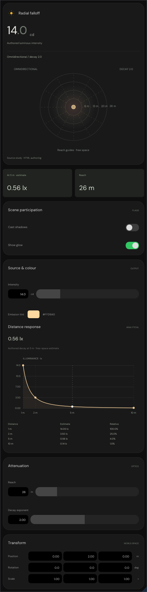
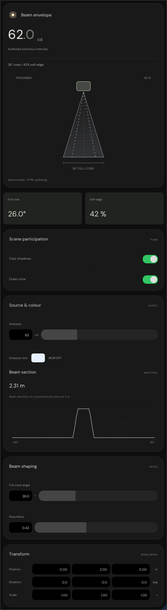
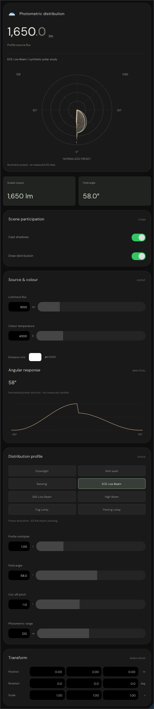
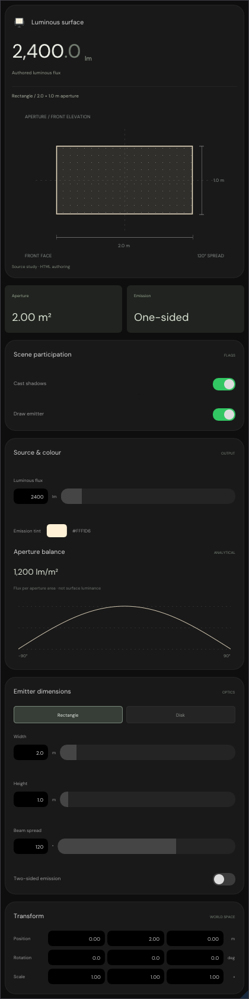
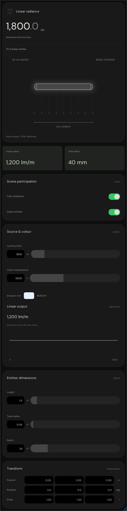
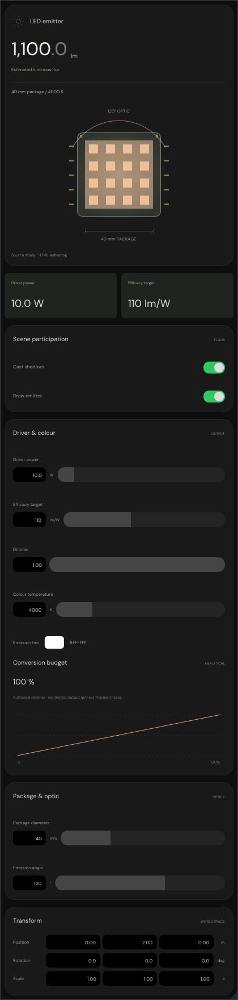
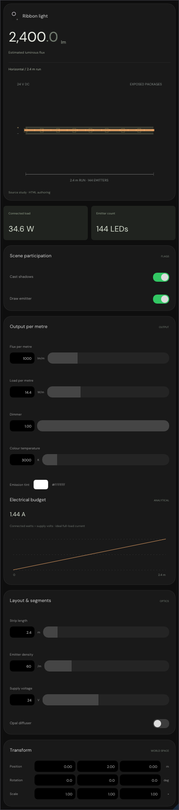

Seven emitters drawn by Engine/Editor/LightInspectorPanel.cpp, converted 1:1 from
Experimental/ProjectZeroEditor/LightPanel.js, LightPanel.css and
LightProjection.js — the light panel that ships inside index.html. Every capture below is written from
real ImGui draw commands by
python3 Exhibits/Workbench/Lighting/RunNativeEmitterCards.py, not mocked up.
Each emitter is shown at the two widths an inspector column actually gets. At 318 px the axis fields clip
their leading digit, which is what the browser does as well: .step .f carries
min-width:0, so flexbox shrinks the field past its 38 px basis and the input clips. The
420 px capture shows them whole.
The cards are live, not stills. Three of the checks drive a synthetic mouse through the panel and read the
published EditorProperty slots back: clicking the switch writes Cast shadows,
pressing near the right end of a range track seeks spot intensity from 62 cd past 150 cd, and dragging an
axis cell moves Position. The captures below are drawn before any of that input.






